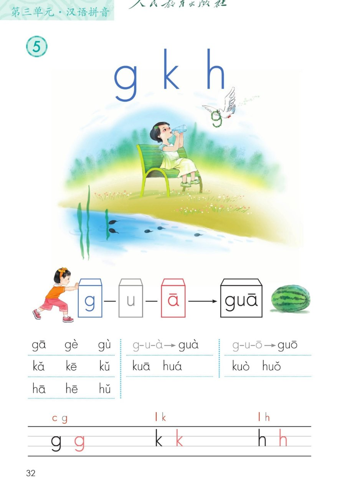
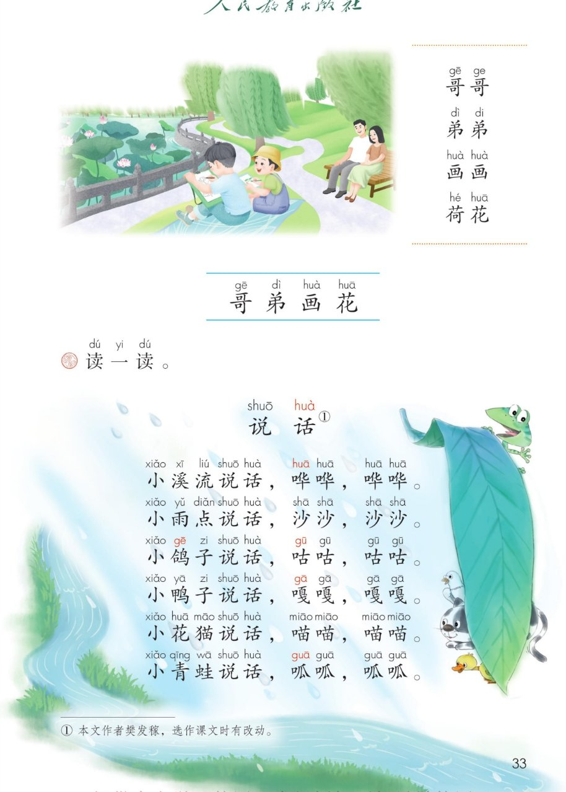

×
🔊 手机听不到声音怎么办？
① 先把手机
媒体音量调大
，确认没开静音、没连蓝牙耳机；在微信里打开的，点右上角「⋯ → 用浏览器打开」。
② 还是没声音？到应用商店免费下载
Microsoft Edge 浏览器
（它自带朗读发声），用它打开本页面就能出声。
③ 换了 Edge 仍然没声音，说明这部手机的
硬件/系统不支持
网页朗读（多为老旧机型）；近几年买的新手机一般都能正常播放。
→ 打开声音自检
统编版 · 一年级上册 · 第三单元 · 汉语拼音 5
拼音 5 · g k h
三个声母：9 字加弯 ggg，水草蝌蚪 kkk，一把椅子 hhh
课本第 32~33 页，重点学
三拼音节
，读儿歌《说话》
认声母
三拼音节
音节表
说话
闯关 8 题
拼音 1
a o e
拼音 2
i u ü
拼音 3
b p m f
拼音 4
d t n l
拼音 5
g k h
拼音 6
j q x
这一课学什么：
认识三个
声母
g、k、h，学会
三拼音节
的拼读方法（声母＋介母 i/u ＋韵母）， 拼读书上的音节表，读词语「哥哥、弟弟、画画、荷花」，再读儿歌《说话》。发音方法以课本和老师教的为准。
① 认一认
② 三拼音节
③ 拼一拼
④ 写一写
⑤ 词语读一读
⑥ 读一读 · 说话
⑦ 闯关 8 题
课本原页
① 认一认 · 三个声母
课本第 32 页
点卡片听口诀，声母要读得轻短
g 像什么：
9 字加弯（🕊️ 白鸽衔着柳枝），也像一串葡萄。9 字加弯 g g g。
② 三拼音节 · 本课重点
课本第 32 页
三个音碰一起，拼出一个新音节
g
—
u
—
ā
→
guā
g 是声母，读得轻
u 是介母，读得快
ā 是韵母，读得响
💡
三拼口诀：
声轻、介快、韵母响，三音相连要利落。像小手一拍即合，中间不停顿。🍉 拼出来就是「西瓜」的瓜！
g
—
u
—
à
→
guà
guà：挂画的挂
g
—
u
—
ō
→
guō
guō：炒菜的锅
k
—
u
—
ā
→
kuā
h
—
u
—
ǒ
→
huǒ
kuá：第二声
kuò：第三组
huǒ：着火的火
小拓展：
介母像个「中间人」，站在声母和韵母中间。今天先认识
u
做介母，以后还会见到
i
做介母的三拼音节。🤝
③ 拼一拼 · 音节表
课本第 32 页
点一格读一格
两拼复习：
前音轻短后音重，两音相连猛一碰。🎯
④ 写一写 · 四线格
课本第 32 页
先看写法，再动笔
⑤ 词语读一读
课本第 33 页
点词卡跟读
连起来读
哥哥 · 弟弟 · 画画 · 荷花
——哥哥弟弟在荷池边画画，画的是美丽的荷花。
💡 「弟弟」的第二个字和「画画」的第二个字都读
轻声
，要读得又轻又短。
⑥ 读一读 · 说话
课本第 33 页
点一行读一行
小
xiǎo
溪
xī
流
liú
说
shuō
话
huà
，
哗
huā
哗
huā
，
哗
huā
哗
huā
。
小
雨
yǔ
点
diǎn
说
shuō
话
huà
，
沙
shā
沙
shā
，
沙
shā
沙
shā
。
小
鸽
gē
子
zi
说
shuō
话
huà
，
咕
gū
咕
gū
，
咕
gū
咕
gū
。
小
鸭
yā
子
zi
说
shuō
话
huà
，
嘎
gā
嘎
gā
，
嘎
gā
嘎
gā
。
小
花
huā
猫
māo
说
shuō
话
huà
，
喵
miāo
喵
miāo
，
喵
miāo
喵
miāo
。
小
青
qīng
蛙
wā
说
shuō
话
huà
，
呱
guā
呱
guā
，
呱
guā
呱
guā
。
① 本文作者樊发稼，选作课文时有改动。
🎵 全首连读
读一读，想一想：
每种小东西都有自己的声音——溪水哗哗、雨点沙沙、鸽子咕咕、鸭子嘎嘎、花猫喵喵、青蛙呱呱。边读边学它们的声音，看谁学得最像！🐸
⑦ 闯关 · 8 题
点题目可以听题，点选项就判对错，答完自动算分
已经答 0 题，答对 0 题。
课本原页 · 第 32~33 页
点图放大

第 32 页 · g k h · 三拼音节 · 音节表 · 四线格

第 33 页 · 哥哥弟弟画画荷花 · 儿歌《说话》
🔊 读这一板块
▶️ 整页连读
⏹ 停
← 学习中心